快速入门¶
OpsAny依托于当前最流行的开源自动化运维工具如SaltStack、Ansible、Zabbix、Prometheus等，支持通过API的方式快速对接企业已经部署并生产运行的开源运维工具，避免重复建设。通过多云场景下的CMDB（资源平台）打通端到端的自动化运维全链路。
我们希望OpsAny产品可以让运维在Anytime（任何时间），Anywhere（任何地点），都可以管理Anything（任何运维对象）。
平台功能简介¶
- 工作台：工作台是登录后默认进入的运维工作空间，主要用于工单管理、消息管理和个人设置。是运维工程师进行日常任务处理的平台。
- 资源平台：资源平台是CMDB，主要管理所有的IT资源，包括三大类别：资产信息、应用信息、组织信息，并且支持资产模型自定义和关系自定义。
- 管控平台：管控平台用于主机的管控，包括堡垒机、操作审计等，同时承担着给主机安装Agent的职责，给一个主机安装成功opsany-agent之后就可以进行批量的命令执行、监控和日志采集。
- 作业平台：作业平台是运维编排的平台，支持日常快速进行批量脚本执行、文件分发，配置管理等，支持将运维任务编排成为作业，将作业分配给指定的用户进行管理和操作。
- 监控平台：监控平台是进行主机监控、组件监控、服务拨测的平台，支持基于Grafana定制灵活的数据大屏，同时进行监控的告警通知处理。
- 云管平台：云管平台是进行多云管理的平台，支持阿里云、腾讯云、华为云、AWS、金山云等多个国内公有云，可以统一进行主机、网络、存储的管理和成本的统计。
- 统一权限：统一权限是OpsAny统一的用户、权限、角色的管理平台，在统一权限进行用户添加和权限的配置。
- 开发中心：OpsAny内置了腾讯开源的bk-paas，用户可以通过开发中心，自定义开发自己的运维平台，同时可以借助其它平台开放的API，帮助运维工程师向SRE转变。
基本使用流程¶
主要运维场景的使用流程依次为：
- 导入资源（【资源平台】和【云管平台】）。
- 【管控平台】安装Agent进行管理和控制。
- 【作业平台】进行批量脚本执行、文件分发和作业执行。
- 【监控平台】进行主机监控信息的查看和告警通知。
- 【工作台】进行工单的设计和管理。
- 【云管平台】进行多云管理。
- 【资源平台】进行CMDB的建设。
使用提示：OpsAny所有平台遵循极简的产品设计理念，通常【新建】按钮均在页面的右上角，【导航菜单】在菜单栏的下拉框中，右上角的【用户头像】点击可以进入个人设置和统一权限（管理员角色可以看到）。
导入资源到OpsAny¶
首次使用OpsAny产品，你需要将主机资源导入到资源平台（CMDB）中，针对不同的用户场景和不同的主机类型有不同的导入方法。
公有云自动导入¶
提示：当使用云管平台进行公有云自动导入完毕后，对应的资产也会被导入到CMDB。
在工作台通过平台导航中的链接进入到【云管平台】。
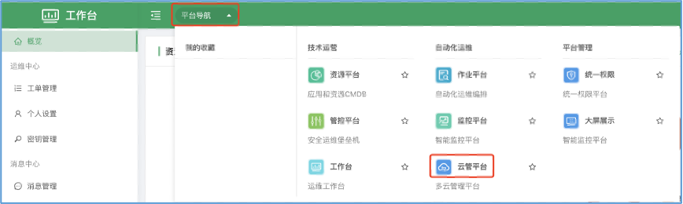
在【云管平台】-【平台设置】-【云账号管理】-点击（新建）。
- 选择云提供商

- 输入API凭证

- 设置云主机所在的区域进行扫描，如果不确定云主机所在的区域，可以全选会对所有区域进行逐一扫描，来搜索云主机。如果区域比较多，扫描可能会持续超过30s。
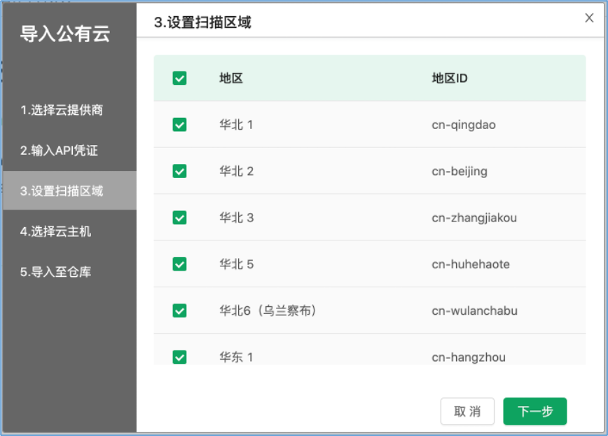
- 选择需要导入的云主机，并进行导入。

物理机自动导入¶
物理机导入需要通过安装Agent，需要在管控平台为该物理机安装Agent之后，即可实现资产的自动导入。
- 在导航菜单中打开【管控平台】，在【主机管理】-右上角点击（添加）

- 填写主机的相关信息，点击【保存】按钮。
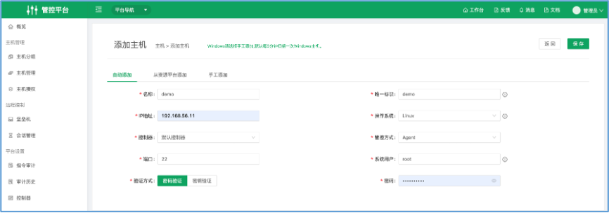
- 如果是Linux系统并且用户是root用户，在操作中点击更多选择【自动安装】进行Agent自动安装。

注意：当前自动安装仅支持Linux主机并且为root用户，非root用户和Windows主机请选择手工安装，注意Linux需要使用root用户、Windows需要使用Administrator进行Agent部署。
Excel自动导入¶
在【资源平台】-【资源仓库】-选择某个运维对象，点击导入。

会现在一个Excel表，请根据Excel表的填写帮助，填写Excel。并完成导入。
资源手工录入¶
在【资源平台】-【资源仓库】-选择某个运维对象，点击右上角【新建】即可。
管理主机资源¶
当主机安装完毕Agent之后，会自动采集主机信息到【资源平台】中，可以在导航菜单中，打开资源平台。
查看主机详情¶
- 在【资源平台】-【仓库管理】可以查看所有的资产，点击（云主机）可以进入到云主机的资源管理页面。

- 当前演示环境有4台云主机，可以导出Excel表。
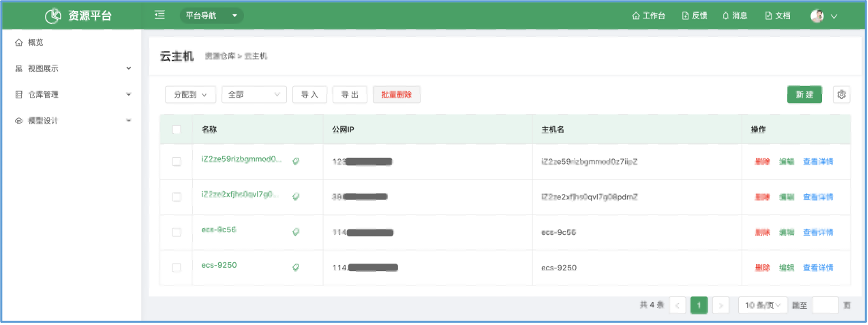
- 点击右侧操作的【查看详情】，或者点击主机名称均和进入到主机详情页，可以看到导入的主机的详情，下面的案例由于并没有安装Agent，所以更详细的主机信息并没有自动采集到。
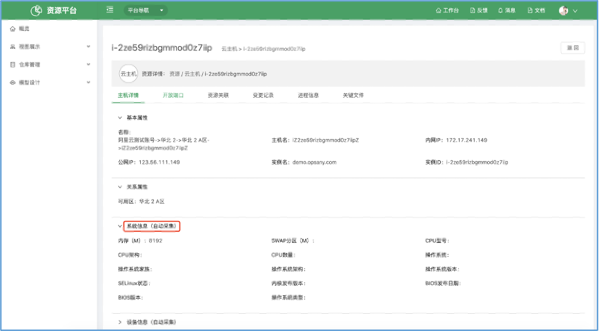
给主机设置运维人员¶
【管控平台】-【主机授权】点击授权，可以把主机授权给某个用户。
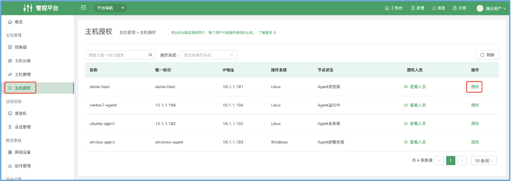
给主机安装Agent¶
OpsAny通过Agent可以对主机进行命令执行、文件分发、数据采集，所以要实现OpsAny所有的功能，需要给主机安装Agent。打开管控平台进行Agent自动化安装。
- 在【管控平台】这种，选择【主机管理】-【添加】按钮可以打开节点添加页面。
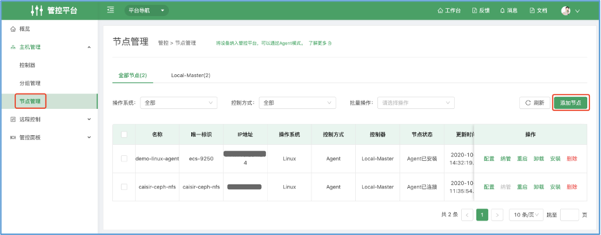
- 配置主机节点信息。

- 请点击【安装】进行Agent安装。

注意：自动安装仅支持Linux系统和root用户，Windows和非root用户，请选择手动安装。
使用堡垒机安全运维¶
Web SSH远程控制¶
在【管控平台】-【控制台】-点击主机，选择打开会话，即可打开Web SSH远程连接界面，在右侧即可进行日常管理工作。也可以在【主机管理】中点击登录即可在新窗口中打开Web终端。
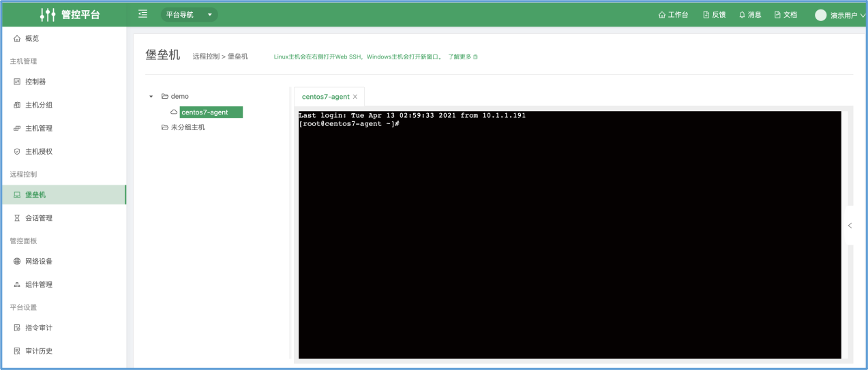
查看审计录像¶
在【会话管理】-【会话历史】-点击审计查看即可查看录像。

会自动播放对应会话的所以执行历史。

批量执行运维脚本¶
在日常运维工作中，我们需要快速的进行批量脚本执行，可以在【作业平台】完成。
快速脚本执行¶
界面位置：【作业平台】-【脚本执行】，即可进行脚本执行。
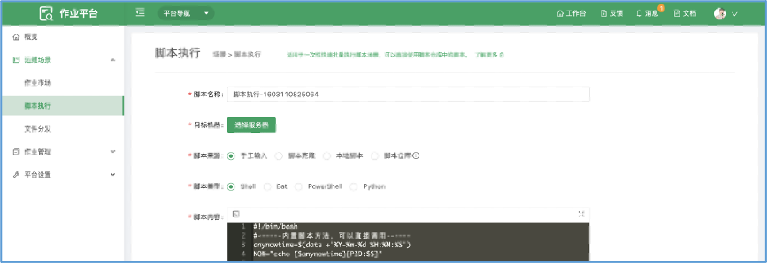
- 点击【选择服务器】，选择需要执行的主机。
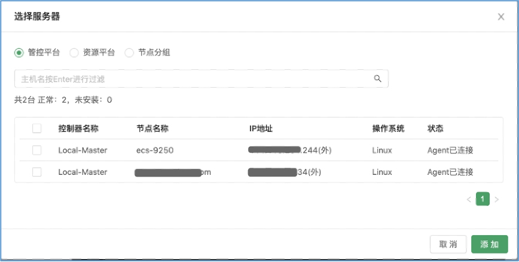
- 输入脚本内容和脚本参数，点击【执行】即可执行，执行完成之后，可以点击左侧的节点名称，查看每个节点的日志。
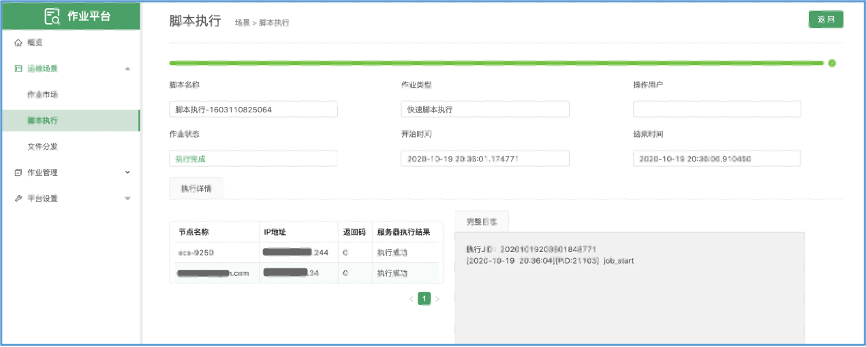
用户和权限管理¶
添加用户¶
- 使用admin登录平台，点击右上角用户头像，进入【统一权限】

新建用户，注意给用户选择对应的权限，或者在权限策略，自定义权限策略。
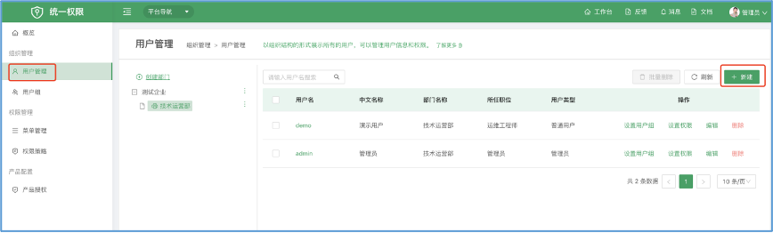